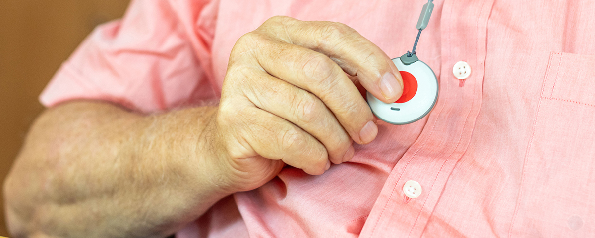

Tranquilidad.
Tanto para quien lo utiliza como para el entorno familiar o personal, al saber que estás conectado y atendido por un equipo de profesionales con vocación por las personas.

Seguridad.
Saber que siempre, las 24 horas, los 365 días puedes contar con nosotros, permite disfrutar de las cosas realmente importantes de la vida.

Respuesta inmediata.
A necesidades vitales al movilizar los recursos necesarios gracias a los datos de salud y personales que nos has facilitado.